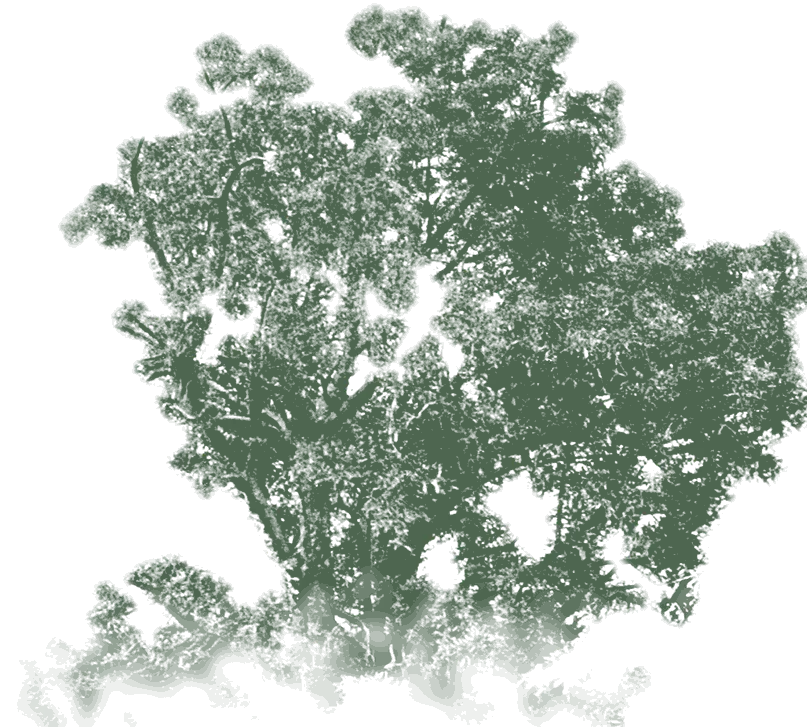
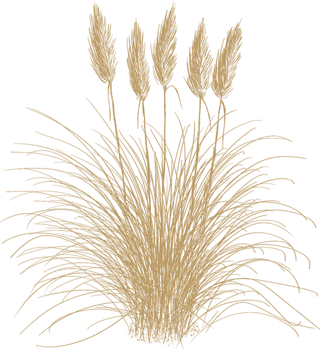
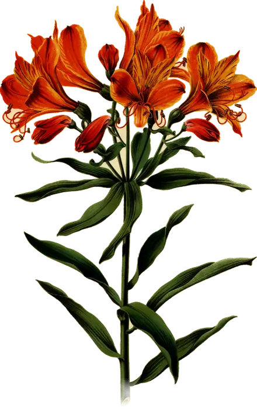
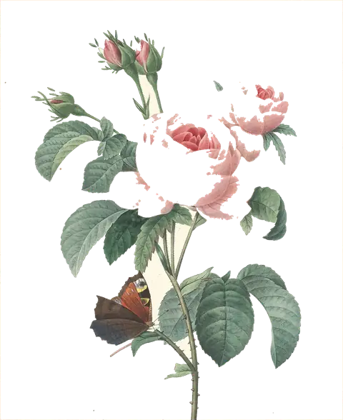
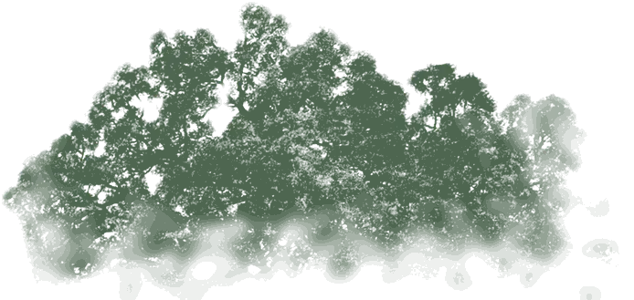
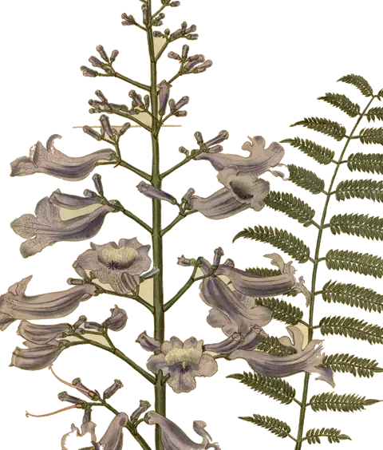
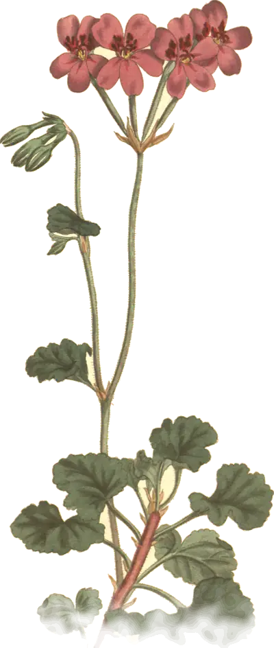
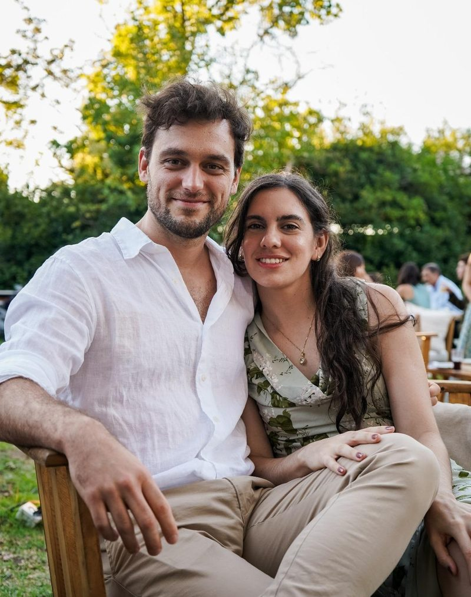
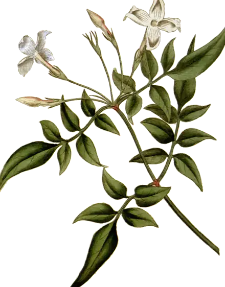
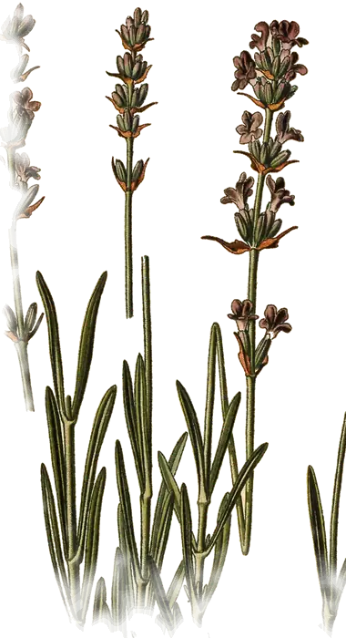

Ceremonia y fiesta
18:00 h
Sábado 9 de enero
Estilo Coghlan
Dr. Pedro Ignacio Rivera 3804, Coghlan, CABA
Todo en el mismo lugar. Te esperamos a las 18:00; la ceremonia empieza a las 18:30.
Dress codeElegante sport







Jess & Guille
Sábado 9 de enero de 2027
Tocá el sello para abrir

Nos casamos
Estilo Coghlan · Buenos Aires
Faltan


Nos conocimos hace unos años y desde entonces no paramos de armar planes. Este es el más grande de todos, y queremos vivirlo con la gente que más queremos.
Jess & Guille
Cuándo y dónde
18:00 h
Sábado 9 de enero
Estilo Coghlan
Dr. Pedro Ignacio Rivera 3804, Coghlan, CABA
Todo en el mismo lugar. Te esperamos a las 18:00; la ceremonia empieza a las 18:30.
Dress codeElegante sport
Contanos si venís
Te pedimos confirmar antes del 9 de diciembre de 2026.
Cargando el formulario…
¿Tarda mucho? Abrilo aparte¿No te carga el formulario? Abrilo en una pestaña nueva.
¿Ya confirmaste? Gracias. Esto es lo que te puede servir ahora:
Si querés hacernos un regalo
El mejor regalo es que nos acompañes ese día. Pero si además querés colaborar con nuestra luna de miel, te dejamos los datos acá abajo.
Alias
jess.guille.boda
Guillermo Eduardo Santillan · Mercado Pago
Si preferís otra forma de regalo, escribinos y lo vemos.
Hora por hora
Recepción de los invitados en el jardín.
En el jardín del salón.
Cóctel con comida, hasta las 20:30.
Mientras tanto, los novios se sacan fotos en el parque.
Vals y a bailar.
Plato principal, y a las 22:00 el postre.
A bailar hasta las 23:00.
Corte de torta, brindis y mesa dulce, hasta las 00:00.
Lo que más nos preguntan
El salón no tiene estacionamiento para invitados.
No: ceremonia y fiesta son en Estilo Coghlan.
Indicala en el formulario de confirmación y la cocina la tiene en cuenta.
Hasta el 9 de diciembre. Después de esa fecha ya cerramos el número con el salón.
¿Otra duda? Escribinos, respondemos rápido.
Escribinos por WhatsApp